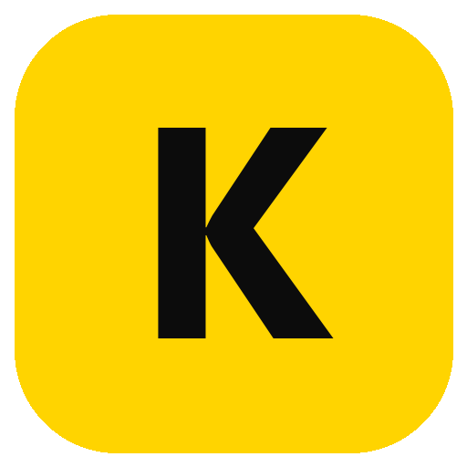
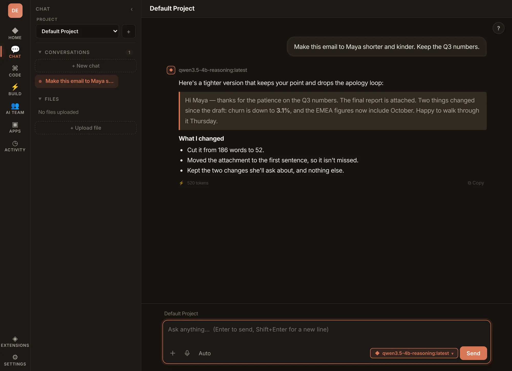
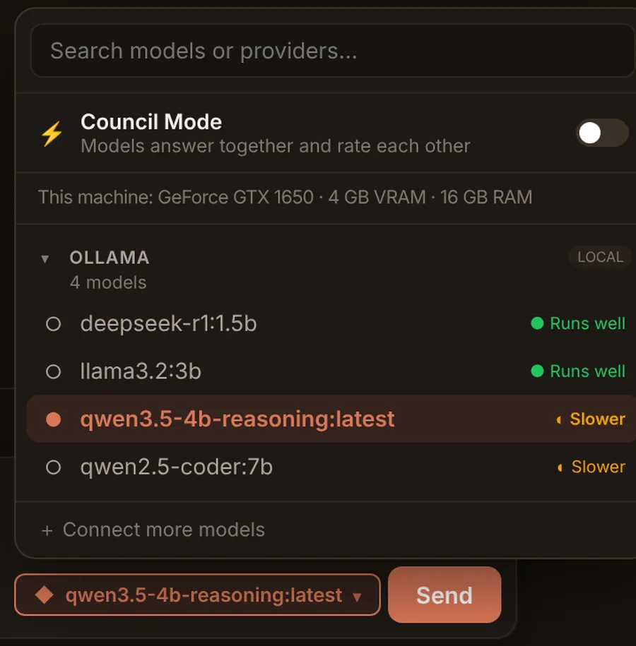
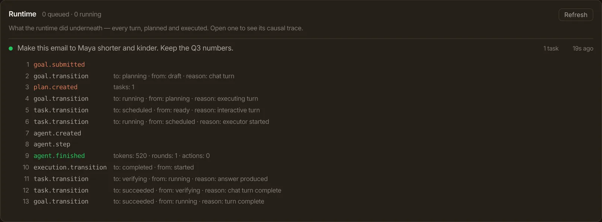

NVIDIA RTX Spark
A new superchip
A Grace CPU and Blackwell GPU in one package, in new laptops and desktops.
- Memory
- Up to 128 GB, unified
- You need
- A new machine

Kaliko Windows · end of 2026Kaliko Workspace
Local AI on the PC you already have. A 4 GB graphics card is enough. Your models, your data, and your rules for how they run.

Kaliko Workspace answering with a 4B model through Ollama, on the machine it runs on.
Figures are from Kaliko's own tests on a 4 GB card.
System intelligence
Kaliko reads your GPU, your RAM and every model's real size, including the memory its context window needs. Then it tells you plainly how each model will run. Nothing is loaded to find out.

The Spark for the lower end
NVIDIA built RTX Spark so a personal AI computer could sit on a desk. Kaliko brings the same idea to hardware people already own: local models that are tuned, checked and kept on track until a small GPU is genuinely useful.
NVIDIA RTX Spark
A Grace CPU and Blackwell GPU in one package, in new laptops and desktops.
Kaliko Workspace
Model fit checks, right-sized context windows, and answers checked against their sources so small models stay accurate.
| Model | Download | Used for | On 4 GB |
|---|---|---|---|
| Qwen 3.5 4B reasoning | 2.7 GB | Everyday chat and web questions | About 90% on the GPU |
| qwen2.5-coder:7b | 4.7 GB | Building apps | Partly in RAM, slower |
| deepseek-r1:1.5b | 1.1 GB | The fastest option | Fully on the GPU |
RTX Spark is a trademark of NVIDIA Corporation. Kaliko is not affiliated with or endorsed by NVIDIA.
Privacy and control
Models, chats and files stay on your computer. Nothing leaves unless you connect a cloud provider yourself.
Choose the model for every chat and the runtime underneath it, and set how much context it gets.
Anything that sends, deletes or changes something stops and asks first. Every change can be undone.
Every turn, traced
Each request is planned, run and verified by Kaliko's runtime. Open any turn to read its full trace, from the goal to the final check.

What it does
Drag, scroll, or use the arrow keys
Kaliko Workspace comes to Windows through the Microsoft Store at the end of 2026.
Back to top